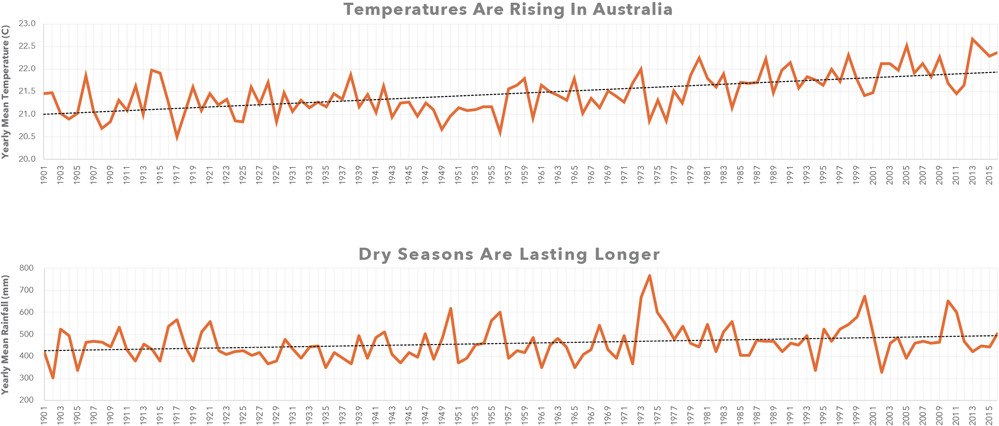

Bushfires are an always present part of Australia's history, but with recent blazes in the past decade destroying properties and lives, what does the future of bushfires look like?
By analysing data from NASA's Fire Information for Resource Management System (FIRMS) - we're better able to understand these natural disasters. FIRMS collects infrared hotspots, clear indicators of bushfire activity, over a square kilometre using a system of satellites. This can create a map over time which can document the potential underlying cause of these bushfires. A major challenge in mapping such data previously was the poor documentation on rural and regional parts of the country, with a stronger focus on more populated cities along the East and West coast of Australia.
Climate Change's Role
Bushfires usually occur between August and January, with hotter and drier conditions becoming a challenge for firefighters. A rising trend in temperatures across the country in the past 115 years could mean more intensive future bushfire seasons. Another factor that comes into play is the more extreme recordings of minimum and maximum rainfall along with longer dry seasons.

Visualising Recent Bushfire History
15 years of this hotspot data has been paired with climate data from the World Bank Group. Given an average of 20,000 hotspots per month for the 21st century, explore the recent years activity along with notable events in recent history. The percent change allows for a better understanding of how our climate is fluctuating during that month and possible conditions for these bushfires to thrive in.
0
hotspots in
January 2001
Average Temp:
Percent Change: +1.1%
Average Rainfall:
Percent Change: +2.1%
Percent change based on corresponding
month averages from 1901-2001
Exploring the Connections
Below is a parallel coordinates graph with both the relevant climate conditions and hotspot activity. Select values on an axis to filter and see the relationships of both the overall bushfire seasons and climates effect on them. The axes can also be reordered by dragging them to the desired position.
Through this graph, we can see that higher temperatures and lower precipitation lead to some of the highest hotspot activity. With both of these climate changes in our future, we are likely to see more bushfires popping up through Australia.
Seasons Play a Large Part
Although we can see trends in Australia overall, it is important to consider the seasonality of the fire seasons for different parts of Australia. Notable events like the Canberra bushfires in 2003 and the The Great Divide bushfires in Victoria in 2006 and 2007 can also be viewed, while other large bushfires appear that were never documented due to their lack of threat and isolation. In 2011 and 2012, rainfall fell and temperatures started rising causing longer bushfire seasons viewable in the nationwide heatmap. These climate changes won't only result in more bushfires, but also longer fire seasons that exhaust our firefighting resources.